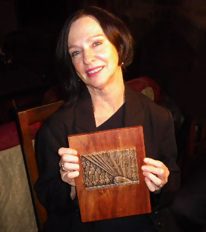
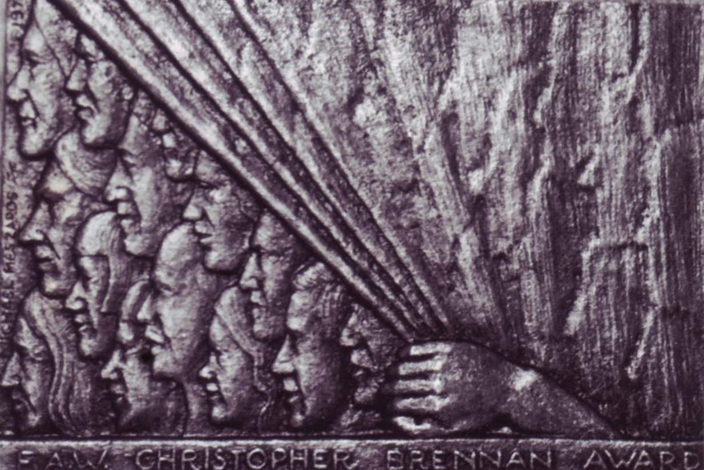

|
|


Jennifer
Harrison
| Published Titles : |
Cabramatta/Cudmirrah Dear B Said the Rat! (ed.) Folly & Grief Colombine, New & Selected Poems Anywhy |
| Down to Christopher Brennan Award Psych-E: Profile |
Jennifer Harrison was born in Liverpool, Sydney, in 1955, in a motorbike shop. She completed a medical degree in 1979 and her training as a psychiatrist in 1990. She runs the Developmental Assessment Program for children and adolescents at the Alfred Hospital, Melbourne.
She began writing poetry while living in Boston, USA. Jennifer’s poetry has won many prizes including the 2003 NSW Women Writers National Poetry Prize, the 2004 Martha Richardson Poetry Medal and the 2004 Australian Book Review Poetry Prize. Her poetry has appeared in The Best Australian Poetry 2003, The Best Australian Poems 2004 and The Best Australian Poetry 2005.
Her first collection Michelangelo’s Prisoners won the 1995 Anne Elder Award and was commended in the Banjo Awards of the same year. Her second collection Cabramatta/Cudmirrah, clear-eyed, celebratory, sharp and elegaic, explores her urban youth and the familiar coast of childhood and family. Dear B was her third collection. She has lived in the United States and New Zealand and has travelled in the Himalayas. She lives with her family in Melbourne where she practises as a psychiatrist. As a poet successive reviewers in Australian Book Review have compared her to Gwen Harwood, Judith Wright and Elizabeth Bishop. As Alan Gould has written, her poems are ‘deeply attentive to the strangeness they have found in the world’.
Jennifer Harrison’s photographs have been exhibited in the Reveries Gallery in Bendigo and her poems in the National Gallery of Victoria. Jennifer rows with the Dragons Abreast dragon boat racing team and loves being out on the Yarra River in the Melbourne evenings. The rhythms of dragon boat drumming combined with the homely stare of the dragon across the water pretty much sum up her poetic aspirations.
Black Pepper published Harrison’s Folly & Grief, in 2006. She co-edited (with Kate Waterhouse) Motherlode: Australian Women’s Poetry 1986-2008 (Puncher and Wattmann, 2009). Her most recent book, published by Black Pepper in 2011, was Colombine; New & Selected Poems. In March 2012 she won the 2011 Christopher Brennan Award for excellence in poetry (presented by the Fellowship of Australian Writers, Victoria). Previous winners have included Les Murray, Bruce Dawe, Judith Rodriguez, Judith Wright and Dorothy Porter.
For 2012 Jennifer Harrison has a research position at the Dax Centre, the national collection of mental health art, which is housed at the University of Melbourne. Together with fellow poet Jessica Raschke she will be curating poetry for the collection.
In 2012 she was appointed a board member of the new International Poetry Studies Institute based at the Donald Horne Centre for Research, University of Canberra.
Jennifer Harrison: Interview and reading, 3CR 1 April 2014
Winner of the 2011 CHRISTOPHER BRENNAN AWARD
For Excellence in Poetry
 |
 |
Top of Page
From Psych-e Bulletin
Fellow Profile - June 2012: Dr Jennifer Harrison
Melbourne child psychiatrist and poet Dr Jennifer Harrison has been awarded the Fellowship of Australian Writers’ 2012 Christopher Brennan Award for lifetime achievement in poetry. The award established in 1973 recognises poets who produce work of sustained quality and distinction. Previous winners have included Les Murray, Bruce Dawe and Dorothy Porter.
Dr Harrison has edited a number of poetry anthologies including Motherlode: Australian Women’s Poetry 1986-2008 (with Kate Waterhouse) and has published five collections of poetry. Her most recent collection Colombine: New and Selected Poems was shortlisted for the Western Australian Premier’s Award.
In 2012, together with fellow poet Jessica Raschke, she will curate poetry for the Dax Centre, the Australian collection of mental health art now housed at the University of Melbourne.
Where do you work and what do you do?
I work with children with developmental disorders and their families at the Alfred Child and Youth Mental Health Service, Alfred Hospital, Melbourne, running the Neuropsychiatry Clinic and Developmental Assessment Program. I feel strongly that children with intellectual disability and autism require sophisticated, multidisciplinary and supportive mental health services and paediatric services. They need assistance early in life and throughout their transitions from kindergarten to primary school, from primary school to secondary school, and on from secondary school to employment and tertiary education settings.
What do you like about working in psychiatry?
I very much like working with young children and their parents because early intervention and parent support is particularly powerful and effective early in a child’s life.
How did you start writing poetry?
I began writing poetry as a child, myself. My first poem was published when I was 9 or 10 years old in the Sydney Morning Herald. As far as I can recall, it was titled ‘Spring’. I’ve always written poetry alongside my medical studies and practice. During my medical student days at NSW University I studied creative writing, though I didn’t begin publishing poetry as an adult until I had become a Fellow of the College.
Tell us about the interrelation of psychiatry and poetry?
I’ve been interested in bringing together my literature interests and psychiatry as I think poetry has much to offer our understanding of human emotions and trauma. I like to find new avenues for poetry to prove its power and I’m delighted that soon my poem ‘Sanatorium’ will be one of the first poems published in the Medical Journal of Australia. I find great solace and pleasure in reading poetry and for the past 15 years I have joined with a group of fellow psychodynamically-interested psychiatrists and analysts to form the Melbourne Psychoanalysis and Poetry Reading Group.